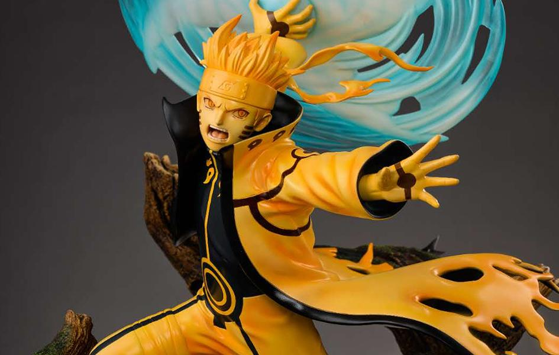

Naruto Uzumaki(うずまきナルト, Uzumaki Naruto) is a shinobi of Konohagakure's Uzumaki clan. He became the jinchūriki of the Nine-Tails on the day of his birth — a fate that caused him to be shunned by most of Konoha throughout his childhood. After joining Team Kakashi, Naruto worked hard to gain the village's acknowledgement all the while chasing his dream to become Hokage. In the following years, through many hardships and ordeals, he became a capable ninja regarded as a hero both by the villagers, and soon after, the rest of the world, becoming known as the Hero of the Hidden Leaf (木ノ葉隠れの英雄, Konohagakure no Eiyū, literally meaning: Hero of the Hidden Tree Leaves). He soon proved to be one of the main factors in winning the Fourth Shinobi World War, leading him to achieve his dream and become the village's Seventh Hokage (七代目火影, Nanadaime Hokage, literally meaning: Seventh Fire Shadow).
Naruto was born on the night of October 10th to Minato Namikaze (the Fourth Hokage) and Kushina Uzumaki (the second jinchūriki of the Nine-Tails). He was named after Naruto Musasabi, the protagonist of Jiraiya's first book, which made the Sannin his godfather.The Third Hokage made special arrangements for Minato to preserve Kushina's seal containing the Nine-Tails while she gave birth to Naruto in a remote location, escorted by midwives and Anbu. A masked man, Tobi, tracked down their location, however, killed the midwives and Anbu, and captured Naruto, forcing Minato to quickly rescue him and teleport him to a safe house.
With Minato gone, Tobi captured Kushina and released the Nine-Tails from her, using it to devastate Konoha. Minato saved Kushina and left Naruto in her care before he went to protect the village,eventually defeating Tobi and freeing the Nine-Tails from Tobi's control. Returning to Naruto and Kushina's location, Minato realised the only way to stop the Nine-Tails was to seal it within Naruto, believing that his son would someday need the fox's power to defeat Tobi when he returned.Since the Nine-Tails' chakra was too immense to be sealed into an infant, Minato sacrificed his soul to split the fox's chakra in half, sealing the Yin half within himself and the Yang half within Naruto. After telling Naruto how much they loved him, Minato and Kushina succumbed to their wounds from protecting their son from the Nine-Tails and passed away.
Orphaned, not having parents or anyone else to provide for him, Naruto received monthly income from the village in order to afford daily necessities. Naruto grew up not knowing who his parents were, receiving only his mother's surname, as Hiruzen wanted to protect Naruto from his father's enemies.Minato's dying wish that Naruto be regarded as a hero was honoured by the very few who could put aside their pain and losses caused by the disaster, while the majority of Konoha, however having no knowledge of the circumstances surrounding his birth, openly ostracised and resented Naruto for containing the beast that devastated the village and took many lives; some even viewed Naruto as the Nine-Tails itself. Soon, the Third Hokage forbade anyone from mentioning the Nine-Tails, hoping that the younger generation would not blindly hate Naruto as their parents did.However, Naruto's peers emulated their parents' hatred of him, despite not knowing why. This social isolation caused Naruto to crave acknowledgement, which he would gain by pulling pranks.
Naruto is noted as boisterous, exuberant, and unorthodox, quite similar to Hashirama Senju.He inherited his mother's verbal tic, as he ends his sentences with "Dattebayo!" (だってばよ!) when emotional. Though he responds best to competition and is not afraid to ask for assistance, Naruto is relatively naïve and slow to understand principles or situations. He often requires an oversimplified analogy in order to grasp explanations and can even prove forgetful.Naruto is aware of his faults and admits he acts strong to mask his embarrassment and frustration about them.Despite his naivety, Naruto can be quite observant, picking up on things others miss and retaining information casually gathered through conversation.
Growing up as an orphan who suffered years of hatred and social isolation has influenced Naruto's character in a number of ways: he is heedless to formality and social standings, addressing certain people with nicknames instead of honourifics, although by the time of his adulthood, Naruto has slightly outgrown this trait.He has picky eating habits of ramen, his favourite food; he has a perverted side that manifests as uses of the Secret Technique or attempts to peep into women's baths.Despite his quirks and the criticism they earn him, Naruto is said to have a personality that draws people to him,inspiring friendship and loyalty through acts of genuine kindness that could change a person's world view and thus built meaningful relationships that he lacked in early life; the Sage of Six Paths believes Naruto's kindness is a special gift that allows him to save Kurama from its hatred.Naruto deeply cherishes these bonds and will go to great lengths to protect them, best seen with Sasuke after his defection from Konoha. Naruto's time at the Falls of Truth revealed that a part of him hated the villagers for ostracising him, only to admire him after he saved them during Pain's Assault. Upon confronting it, he learned to be at peace with it, willingly becoming greater than what he suffered.
Originally, Naruto was a rather inept ninja, failing to graduate from the Academy three times. Through sheer determination and training however, his skills rapidly improved to defeat strong genin like Neji Hyūga, Gaara, and Kabuto Yakushi, earning acknowledgement from all the Sannin for his potential.Under various tutelage, Naruto was able to defeat various members of Akatsuki, ultimately earning praise from Konohagakure as a Hokage-material hero.Naruto's personally defeated various reincarnated Kage and jinchūriki during the Fourth Shinobi World War.He also could compete against if not defeat world-threatening opponents, such as Madara Uchiha, Kaguya and Toneri Ōtsutsuki. Many believe Naruto was the central key to winning the war.By adulthood, his prowess made him the Seventh Hokage, regarded as the strongest shinobi in history and having command of overwhelming jutsu.With the combined might of Sasuke Uchiha, noted as the only shinobi to rival him,they are said able to destroy a continent.Together, they overpowered transformed Momoshiki Ōtsutsuki, and pushed Isshiki Ōtsutsuki's vessel to its limit, with the latter admitting that his vessel was too weak to defeat Naruto without his assistance. In fact, Amado believes that Naruto and Sasuke are the only ones capable of defeating Isshiki in his imperfect reincarnation, something that he himself also believe in. Once fighting at his absolute peak, Naruto was able to overcome Isshiki in a way that made him afraid for his life.